复现报告：FaIR v2.0.0-alpha
核对日期：2026-11-14。源码提交 47c6eec031d2edcf09424394dbb86581a1b246ba。配置见同目录 config。scientific_status 仍是 unverified。Fig. 2、4、5 和 Fig. S1–S3 的右栏只采用这次写出的 FaIR 输出，不用作者笔记本存好的图。100 万成员的历史和 SSP 指标表已经写出。Fig. 6–10 还要约束笔记本，右栏仍不是这批结果。
<!-- leach-comparison -->
论文图
Fig. 1 是结构示意图。下面每张图左边是论文原图，右边是这次保存的 FaIR 输出按论文坐标重画。曲线一致是因为方程和输入相同，右栏不是论文 png 的拷贝。图下的链接指向这次写出的数值。Fig. 6–10 的 100 万成员指标表已在 2026-11-13 写完，约束后的图还没画，右栏仍是占位。每张对照图同一尺寸。图内文字用英文。
Fig2
历史和 SSP 浓度。彩色实线和灰色历史实线是这次 run_FaIR 写出的浓度。黑点是历史观测。点线是 MAGICC7，点划线是 FaIRv1.5，这两条是论文图里的对照，不是这次的模拟。

这次的模拟结果：fig2_C.csv。右栏单独的图：fig2.png。

Fig3
各 CMIP6 模式的 abrupt-4×CO₂、abrupt-2×CO₂、abrupt-0p5xCO₂ 和 1pctCO₂。右图是 CMIP6-climresp-results 笔记本重跑：黑色是 FaIRv2.0.0-alpha，橙色是 CMIP6。
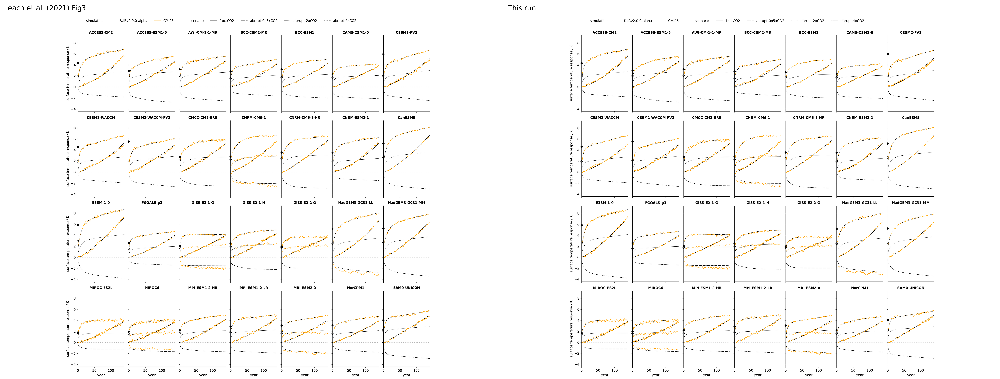
Fig4
C4MIP 1pctCO₂ 碳循环。黑点是这次反演碳循环得到的排放。橙线是 C4MIP 参考，不是 FaIR 的输出。
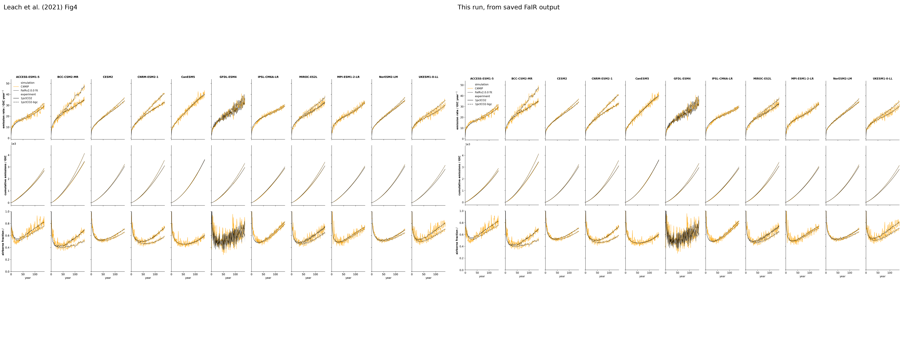
这次的模拟结果：fig4_fair.csv。右栏单独的图：fig4.png。

Fig5
气溶胶有效辐射强迫。黑线是这次用拟合系数算出的 FaIR 强迫。橙点是 RFMIP 参考，不是 FaIR 的输出。
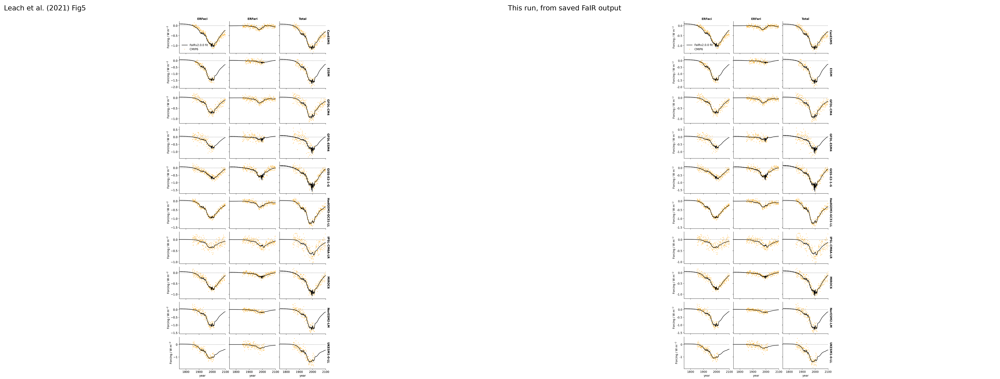
这次的模拟结果：fig5_fair.csv。右栏单独的图：fig5.png。

Fig6
全集合和约束集合的 ECS、TCR。100 万成员的指标表已经写出。约束笔记本还没跑，右栏仍不是重跑。
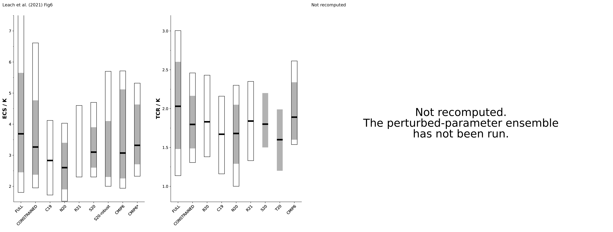
Fig7
约束集合里关键量的联合分布。100 万成员的指标表已经写出。约束笔记本还没跑，右栏仍不是重跑。
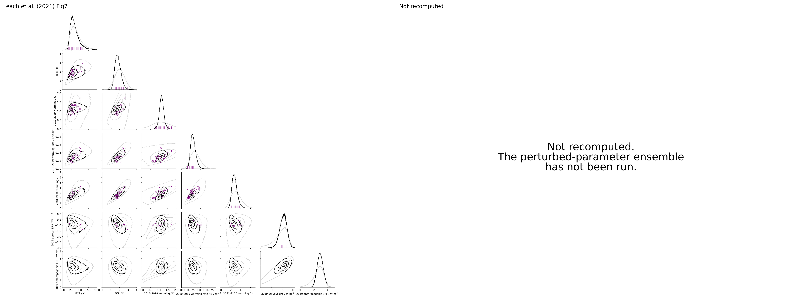
Fig8
理想化试验的集合范围。100 万成员的指标表已经写出。DECK 笔记本还没跑，右栏仍不是重跑。
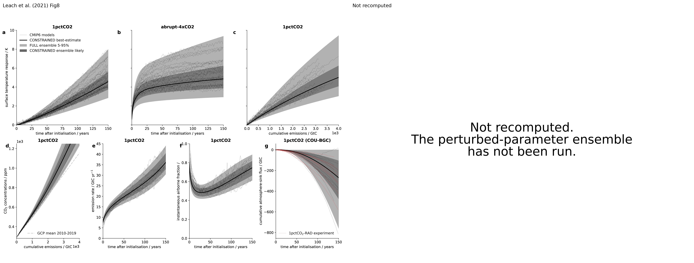
Fig9
各 SSP 的分类有效辐射强迫。100 万成员的 SSP 表已经写出。SSP 笔记本还没跑，右栏仍不是重跑。
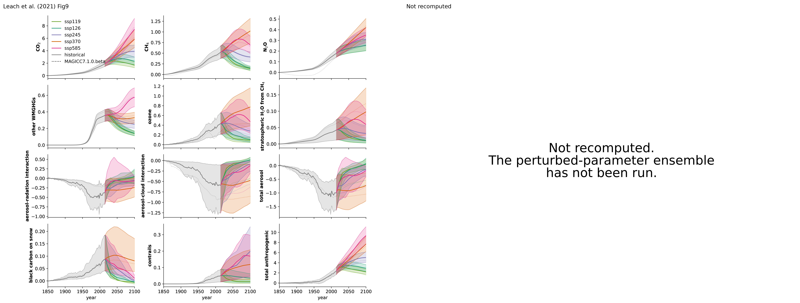
Fig10
各 SSP 的地表温度。100 万成员的 SSP 表已经写出。SSP 笔记本还没跑，右栏仍不是重跑。
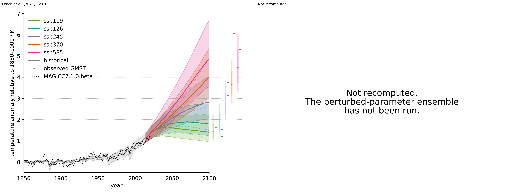
FigS1
补充图 S1。点是这次用 FaIR 公式对 Etminan 线表算的残差，不是作者存好的图。这张图不是气候积分。
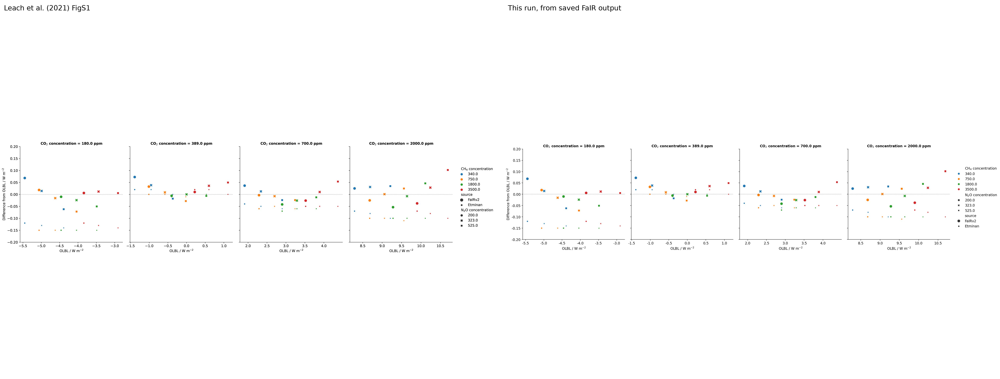
这次的模拟结果：figs1_rf.csv。右栏单独的图：figs1.png。

FigS2
补充图 S2：RCP8.5 的甲烷寿命，来自这次的 run_FaIR。
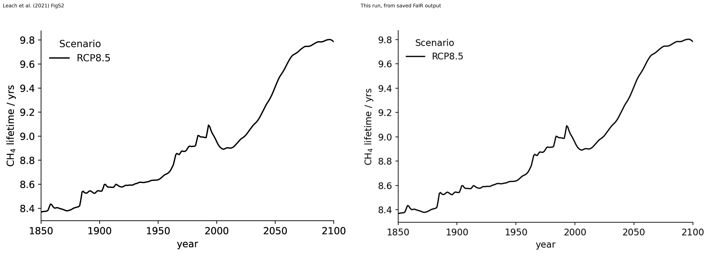
这次的模拟结果：figs2_lifetime.csv。右栏单独的图：figs2.png。

FigS3
补充图 S3：CO₂ 和 CH₄ 脉冲的缩放异常，来自这次的 run_FaIR。
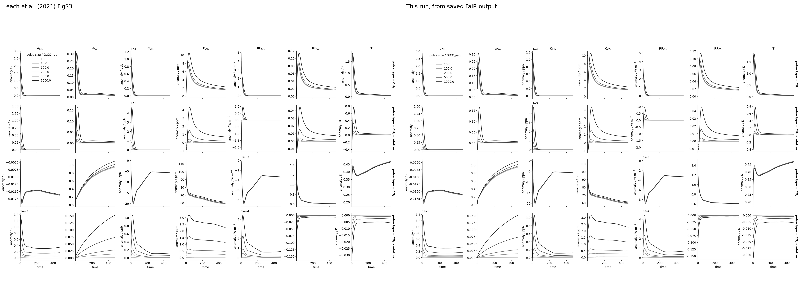
这次的模拟结果：figs3_plot.csv。右栏单独的图：figs3.png。

表 7 和表 10
论文数值见 Leach et al. 2021。约束集合成员在笔记本里是一次没有固定种子的随机抽样，分位数会有抽样涨落。
表 7 还没有生成。
表 10 还没有生成。 <!-- /leach-comparison -->
默认参数
这三次运行用作者默认气体循环，以及 F₂× = 3.759 W m⁻²、RWF = 0.552、TCR = 1.79 K。由此 ECS = 3.243 K，与论文四舍五入后的 3.24 K 一致。工业化前浓度是默认的 278 ppm。Fig. 3 的协议是 284 ppm，并且每个模式用自己的参数。
| 成员 | 论文或设计预期 | 复现结果 | 差值 |
|---|---|---|---|
1pctCO2，第 70 年 |
TCR = 1.79 K；此时 CO₂ 约为初值的 2 倍 | CO₂ 557.88 ppm，是 278 ppm 的 2.007 倍；升温 1.796 K | +0.006 K |
1pctCO2，第 140 年 |
论文没有给出这条默认参数曲线的末年升温 | CO₂ 1119.53 ppm，升温 4.086 K | 无论文数字可对 |
co2_pulse，TCR 1.79，第 100 年 |
论文没有 100 GtC 脉冲的对照值 | CO₂ 292.05 ppm，升温 0.155 K | 无论文数字可对 |
co2_pulse_tcr25，TCR 2.5，第 100 年 |
同一脉冲、更高 TCR 应更暖 | CO₂ 292.11 ppm，升温 0.220 K | 比 TCR 1.79 高 0.065 K |
第 70 年的竖线对应默认 TCR。100 GtC 脉冲打在第 10 年。
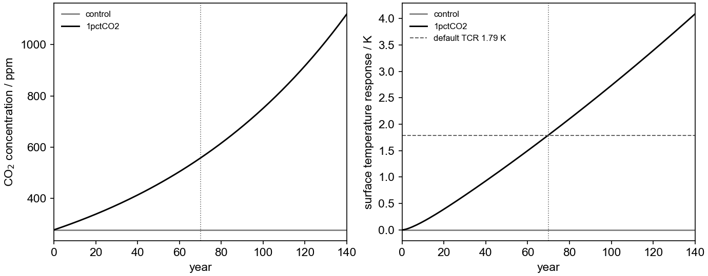
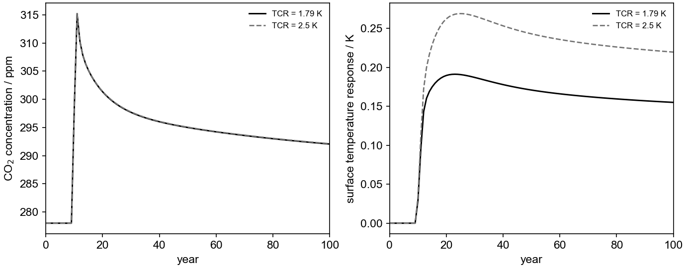
归档
| 成员 | 运行 |
|---|---|
leach_alpha_1pctCO2 |
archive/fair/fair_v2.0.0-alpha/leach_alpha_1pctCO2/latest/，0e0e07bc8f6b411186462e37a3f3c5a6 |
leach_alpha_co2_pulse |
archive/fair/fair_v2.0.0-alpha/leach_alpha_co2_pulse/latest/，85aafd28405a4e3190dd58198ba395a8 |
leach_alpha_co2_pulse_tcr25 |
archive/fair/fair_v2.0.0-alpha/leach_alpha_co2_pulse_tcr25/latest/，2ed2f7e6b0c644aa9199d50aec5318fe |
数值验收均为 passed。Fig. 3 的重跑脚本是 src/model/fair_alpha/plot_leach2021.py。